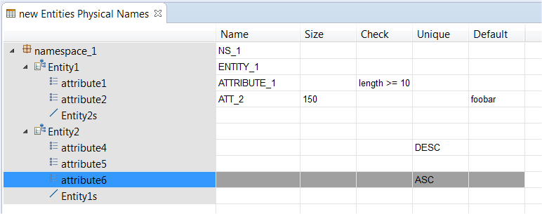

Copyright Copyright © 2008, 2020 Obeo#169; 2008, 2021 Obeo - All rights reserved. This program and the accompanying materials are made available under the terms of the Eclipse Public License v1.0
Authors Stéphane Thibaudeau
Contact stephane.thibaudeau@obeo.fr
Le point de vue
Entity (Safr@n consolidated view) fournit une table permettant de faciliter la saisie d’informations sur le stockage physique des entités.
Les informations sont stockées sous la forme d’annotations.
Pour pouvoir créer une table Entities Physical Names il faut activer le point de vue Entity (Safr@n consolidated view) sur le projet via le menu contextuel Viewpoints Selection sur le projet ou sur le fichier aird.
Une fois le point de vue activé, il est possible de créer une nouvelle table sur un objet
Entities.
A noter qu'à la première activation du point de vue, une table est créée automatiquement pour chaque objet
Entities dans le projet.

Chaque package, entité, attribut et référence est affiché dans la colonne de gauche sous une forme arborescente.
Cinq colonnes Name, Size, Check, Unique et Default :
<nom de colonne1>:<asc ou desc>, <nom de colonne2>:<asc ou desc>, ... | ...La modification des valeur se fait par édition directe des cellules du tableau.